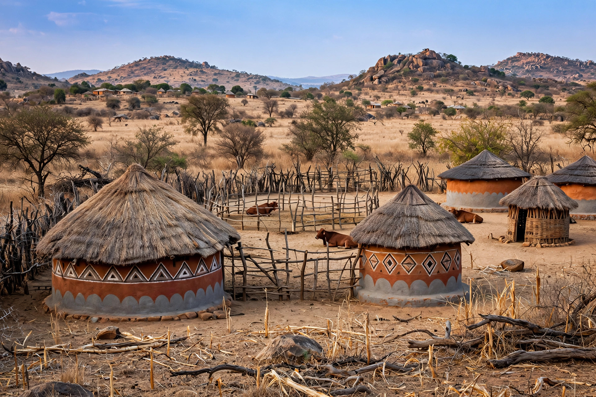

Gukurahundi is the name given to a series of massacres and acts of repression committed in Zimbabwe's Matabeleland and Midlands provinces between 1982 and 1987, principally by the North Korean–trained Fifth Brigade of the Zimbabwe National Army. The violence was directed by Robert Mugabe's ZANU government against suspected supporters of Joshua Nkomo's ZAPU, overwhelmingly members of the Ndebele ethnic group. The Catholic Commission for Justice and Peace in Zimbabwe estimated in its 1997 report Breaking the Silence that about 20,000 people were killed, a figure widely cited by historians though the exact toll remains disputed.
| Gukurahundi | |
|---|---|
 Rural homesteads in Matabeleland North, the region most affected by the Fifth Brigade Matabeleland, scene of the violence | |
| Date | 1982–1987 |
| Location | Matabeleland North and South, Midlands, Zimbabwe |
| Perpetrators | Fifth Brigade, Zimbabwe National Army; CIO |
| Target | Ndebele civilians and ZAPU supporters |
| Deaths | Estimates commonly ~20,000 |
| Ended by | Unity Accord, 22 December 1987 |
The word Gukurahundi is a Shona term meaning "the early rain which washes away the chaff before the spring rains." At independence in 1980, Mugabe's ZANU had defeated Nkomo's ZAPU at the polls, but integration of their rival guerrilla armies, ZANLA and ZIPRA, into a single national army proved violent: clashes at Entumbane in 1980 and 1981 were followed by the discovery of arms caches on ZAPU properties in 1982, after which Nkomo was dismissed from the cabinet and several senior ZIPRA commanders were arrested. A small number of armed "dissidents" — some ex-ZIPRA fighters, some allegedly backed by apartheid South Africa — began operating in Matabeleland.
In January 1983 the government deployed the Fifth Brigade, a unit trained by North Korean instructors and answering directly to Mugabe. The brigade swept through Matabeleland North, beating, raping, and shooting civilians, burning homesteads, and forcing villagers to attend all-night political indoctrination meetings (pungwes). Mass killings occurred in the Tsholotsho, Lupane, and Nkayi districts, and detainees were held at camps such as Bhalagwe in Matabeleland South. A food embargo was imposed on Matabeleland South in 1984 during drought. Mugabe publicly described the operation as necessary against "dissidents," while minister Enos Nkala threatened that ZAPU supporters would be "wiped out."
The violence ended with the Unity Accord of 22 December 1987, under which ZAPU merged into ZANU to form ZANU–PF; a general amnesty followed in 1988. No prosecutions were ever held. Successive Zimbabwean governments suppressed discussion of the massacres, and Mugabe long resisted calls for an official apology, describing the period only as "a moment of madness." After Mugabe's fall in 2017, President Emmerson Mnangagwa — himself a senior security official of the era — authorised dialogue with victims' groups and traditional leaders, though progress on exhumations, reparations, and accountability remained limited.
Categories: Massacres in Zimbabwe · 1980s in Zimbabwe · Human rights abuses